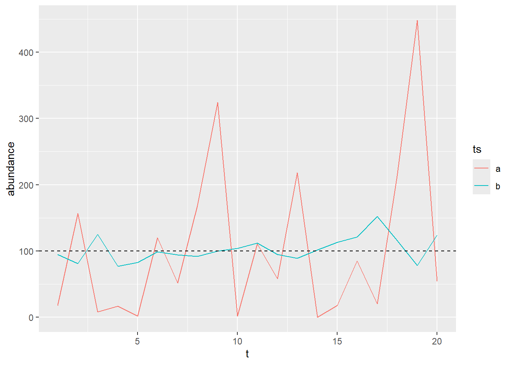
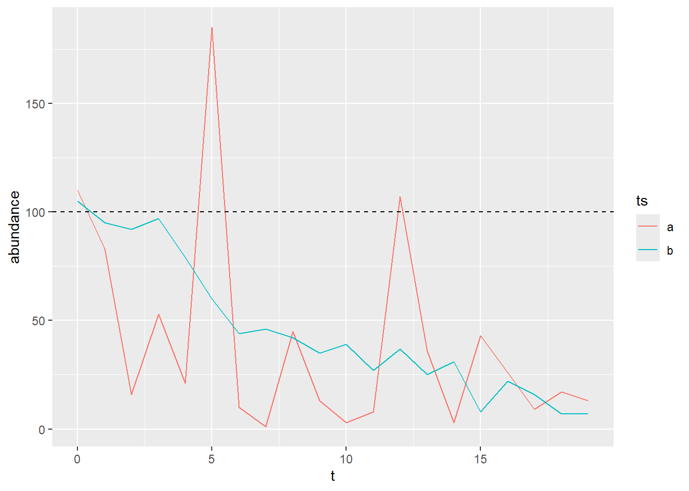

Temporal auto-correlation in negative binomial process
General idea
The general idea is to use simulations to assess how inter-annual variability and temporal autocorrelation can affect the estimation of temporal trend in a monitored population abundance. For example, do we need longer time series to estimate robust temporal trend when a population exhibit higher inter-annual variability in abundance?
To answer this question we would like to simulate time-series of a given species abundance, in which the abundance is measured as counts of individuals, while controlling for the inter-annual variability and the temporal autocorrelation. However, we have problems setting these two parameters in an orthogonal way, which lead us to question the way we can implement temporal autocorrelation in our simulations. Below I detail how we built our simulations to end up with the questions of interest, described in the final part (Section 4).
Introducing our notations
Here we simulate the temporal variation in abundance of a single population per time series. To simulate abundance values, we use a negative binomial distribution, which allowed us to simulate time series with different variance in abundance.
For a stable population, yearly abundance values (\(A_t\)), would be drawn using:
\[
A_{t} \sim NB(p,n)
\]
where \(p\) represents the probability of success and \(n\) the number of target success to reach. Thus \(NB(p,n)\) represents the number of failures which occur in a sequence of Bernoulli trials before a \(n\) successes was reached.
However, this classic parametrization of the negative binomial is not very convenient when talking about species abundance, because parameters don’t have a direct meaning. Thus, we used an alternative parametrization of the negative binomial, using its mean:
\[
A_{t} \sim NB(\mu,n)
\]
where \(\mu\) is the mean abundance around which yearly values vary, with \(\mu=n(1-p)/p\). In this parametrization, we can thus control directly the average abundance. For a given average abundance value (\(\mu\)), the variance (\(V\)) depends only on \(n\) : \(V=\mu+\mu^2/n\). The higher \(n\), the lower the variance. This allowed us to simulate for different inter-annual variability.
Under R we would thus simulate two different time-series with two different level of inter-annual variability using the following lines of codes:
library(ggplot2)#define the number of years in the time seriesn_years <-20#define a fixed average abundancemu=100#define a vector of two different n, for two different inter-annual variabilitiesn_vec=c(1,100)#define a table with time-series characteristicsdf=data.frame(t=1:n_years,ts=rep(letters[1:2],each=n_years),n=rep(n_vec,each=n_years),mu=mu)#simulate abundance valuesdf$abundance <-rnbinom(nrow(df), mu = df$mu, size = df$n)ggplot(data=df,aes(x=t,y=abundance,color=ts))+geom_line()+geom_hline(yintercept=mu,linetype="dashed")

Simulating temporal trend in abundance
Since we were interested in studying how time series properties affect the robustness of the temporal trend estimation, we implemented temporal trend in our simulation by incorporating a trend in \(\mu\), using a geometric series:
\[
A_{t} \sim NB(\mu_t,n);
\]
\[
\mu_t = \mu_0(1+r)^t
\]
where \(r\) is the growth rate of the population, in \(\%.year^{-1}\), and \(\mu_0\) is the original abundance.
For example we can implement a decline of \(10\%.year^{-1}\) in two new time series:
#define the original abundancemu_zero=100#define the growth rater=-0.1#define a table with time-series characteristicsdf=data.frame(t=0:(n_years-1),ts=rep(letters[1:2],each=n_years),n=rep(n_vec,each=n_years),r=r)#define the yearly mu value:df$mu=mu_zero*(1+df$r)^df$t#simulate abundance valuesdf$abundance <-rnbinom(nrow(df), mu = df$mu, size = df$n)ggplot(data=df,aes(x=t,y=abundance,color=ts))+geom_line()+geom_hline(yintercept=mu,linetype="dashed")

For now, we thus have two independent parameters, in which we are interested in, that we can use to simulate our time series: the strength of the temporal trend (\(r\)) and the inter-annual variability (\(n\)).
Incorporating temporal auto-correlation in those simulations
Our headache started when trying to implement temporal-correlation in the time series in the inter-annual variability, in addition to the temporal trend. We were thinking of using a multivariate negative binomial distribution to implement that temporal auto-correlation like we would have do in a gaussian process, but did not find any multivariate negative binomial distribution implemented in R that we could use: did we miss something? is such multivariate distribution straightforward to build?
In the absence of multivariate negative binomial distribution ready to use, we passed through a gaussian process to implement the temporal auto-correlation in the following way:
\[
A_{t} \sim NB(\mu_t,n);
\]
\[
log(\mu_t) = log(\mu_0(1+r)^t) +\epsilon_t;
\]
\[
\epsilon_t \sim \mathcal{N}(0,\Sigma)
\]
where \(\epsilon_t\) is a temporally auto-correlated noise, drawn in a multivariate normal distribution with a mean 0 and variance-covariance matrix \(\Sigma\).
We built \(\Sigma\) based on an auto-regressive process of order 1 (AR1), in which two consecutive years exhibit a positive correlation \(\phi\). Thus the correlation (\(\rho\)) between year \(t\) and year \(t+k\) would be: \(\rho_{t,t+k}=\phi^k\)
From that we can fill the variance-covariance matrix using \(Cov(X, Y) = Corr(X, Y) \times StdDev(X)\times StdDev(Y)\). This general formula translated into \(\Sigma_{t,t+k}=\phi^k*\sigma^2\), where \(\sigma\) controls for the importance of the autocorrelated noise and \(\phi\) for the strength of the temporal autocorrelation.
What do you think of this implementation? We have seen that some people use a Cholenski decomposition to implement the same autocorrelation but I did not understand why this would be needed ?
A problem of our implementation is that now we have two parameters that controls for the inter-annual variability \(n\) from the negative binomial and \(\sigma\) from the multivariate gaussian. Of course we can increase \(n\) to very high value to decrease the variability due to the negative binomial and use \(\sigma\) to control for most of the variability, but we did not find it very elegant, because the total variance would still depends on both parameters.